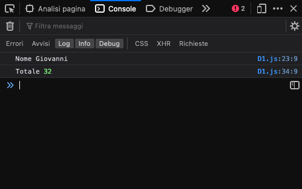

JavaScript è un linguaggio di programmazione che viene utilizzato nell'ambito Front-end per dinamicizzare le pagine, ma può essere usato anche nel Back-end attraverso strumenti come Node.js. È un linguaggio interpretato, supportato ampiamente e gira sui browser.
JavaScript non è un linguaggio a tipizzazione forte nel senso che non possiede variabili dichiarate con un tipo predefinito, peraltro nelle stesse possono essere contenute valori di tipo diverso: oggetti, stringhe, numeri e quant’altro. In questo senso ammette la tipizzazione dinamica. Inoltre i principali comandi utilizzati per indicare le variabili sono let e const (è possibile usare var, ma l'uso è deprecato), che si differenziano per la possibilità di avere dei valori che cambiano nel tempo se i utilizza il comando let, mentre rimangono tali e non è possibile cambiarli se si utlizza const.
I principali data type di JavaScript sono essenzialmente 5:
Per dichiarare un data type si utilizza il comando let
Per verificare lo stato delle nostre variabili possiamo utilizzare il comando console.log(); nel file .js e successivamente aprire il pannello Console integrato nel nostro browser attivabile con il tasto destro del mouse su un punto qualsiasi della pagina e selezionando Ispeziona(Gooogle Chrome) o Analizza (Firefox)
Di seguito vediamo l'utilizzo delle variabili:
Il data type assegna un valore di stringa a una variabile
Il data type assegna un valore di tipo numerico a una variabile che puo essere intero o decimale
Potremo vedere il valore di total utilizzando la funzione console.log(); sopraccitata
Il data type assegna un valore di tipo vero o falso a una variabile
Il data type assegna un valore non definito a una variabile
Il data type assegna un valore nullo a una variabile, ossia segnala l'assenza intenzionale di un oggetto ed è diverso dal valore 0